Mesh dialog box
The options that are available in the Mesh dialog box vary with the type of model (part, sheet metal, assembly) and the type of mesh applied to the model: 2D surface mesh, tetrahedral mesh, beam mesh, or mixed mesh.
- Tetrahedral Mesh
-
Options for a solid part model:
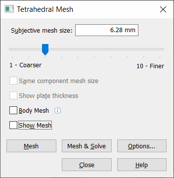
For the solid part model environment, the options Same component mesh size and Show plate thickness are not required and therefore not available.
Options for an assembly model:
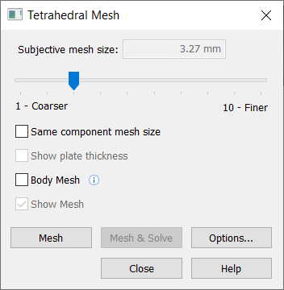
For the solid assembly model environment, the Show plate thickness option is not required and therefore not available.
- 2D Surface Mesh
-
Options for a sheet metal part model:
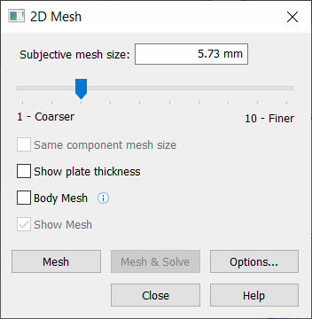
For the sheet metal part model environment, the Same component mesh size option is not required and therefore not available.
- Beam Mesh
-
Options for a frame model:
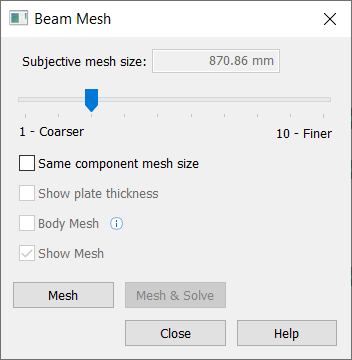
- Mixed Mesh
-
Options for an assembly with solid and sheet metal parts:
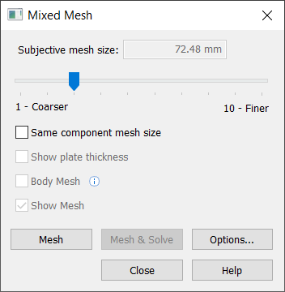
- Subjective mesh size
-
Adjusts the mesh sizing interactively. Slider values range from 1 to 10. Lower values produce a coarser mesh; higher values produce a finer mesh. Higher values also may result in a longer processing time.
On a solid model, the mesh should be ≥2 elements thick.
Note:-
The value shown in the Subjective mesh size box is based on the model size and current units of length.
-
If you previously applied mesh sizing to the model using the Body Size, Surface Size, or Edge Size commands, then the slider control is unavailable.
-
- Same component mesh size
-
This option is available for tetrahedral meshes on assembly models.
-
When cleared, the mesh is sized automatically as appropriate for each component.
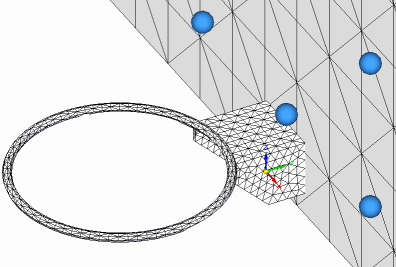
-
When checked, the same mesh size is applied to all components. This is the default Femap behavior.
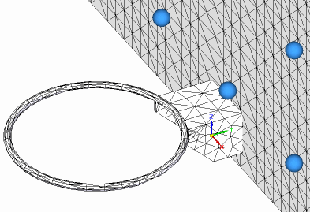
-
- Show plate thickness
-
Specifies that a thickness is displayed for sheet metal parts that contain mid-surfaces and other thin part surfaces.
 Note:
Note:-
You also can use the Show Plate Thickness and Hide Plate Thickness shortcut commands on the top-level Mesh node in the Simulation pane to quickly turn the 2D mesh thickness on and off.
-
The thickness value applied to the mesh is the Thickness value shown in the Simulation pane, under the Material node. You can edit the Thickness value using the Edit Thickness command on its shortcut menu.
-
You can show and hide plate thickness in the Simulation Results environment using the Plate Thickness check box on the Home tab→Show group→Display Options menu.
-
- Body Mesh
-
Select this option to simplify and improve mesh for a complex part or assembly model with intricate bodies. In addition to producing a good quality mesh, it provides automatic geometry cleanup of small faces and edges.
Refer to the table for examples of the types of parts that you can mesh successfully by selecting the Body Mesh check box.
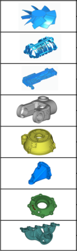
Note:-
The Body Mesh option is not available for a mixed mesh and beam mesh type.
-
This option does not always produce an optimal mesh. If a mesh error message still is generated, deselect the Body Mesh option and mesh again, or experiment with different mesh sizing options, or select the Geometry Inspector command to improve the geometry prior to meshing.
-
- Show mesh
-
Select this option to examine the mesh on a previously meshed model. Deselect this option to review the meshing parameters in the Mesh dialog box, without rendering the mesh on the model.
Note:You also can use the check box on the top-level Mesh node in the Simulation pane to turn the mesh display on and off.
-
In a part model—
-
In an assembly model—
Example:In an assembly, you can use the check boxes to turn the mesh on and off for each body in the study that was meshed.
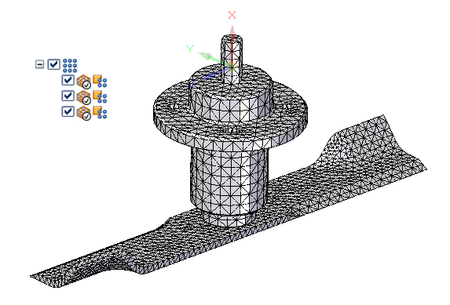
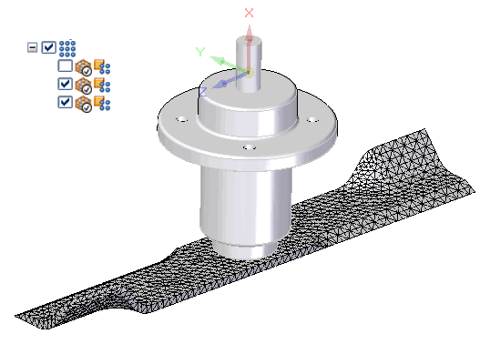
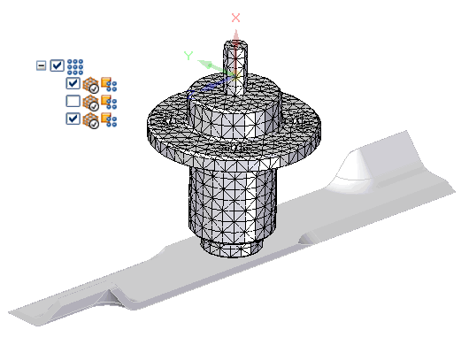
-
- Mesh
-
Starts the meshing process using the NX Nastran solver and displays a progress meter.
- Mesh & Solve
-
This first runs the meshing process and then runs the solving process. It displays a single progress meter throughout.
Note:The Mesh & Solve button is available only when the study definition is complete and a material is assigned.
- Options
-
Opens the Mesh Options dialog box, which provides various options for meshing.
Options that you select in the Mesh Options dialog box are applied and saved with the study when you select either the Mesh button or the Mesh & Solve button to mesh the model.
How do I
Mesh the modelActivity: Use subjective mesh sizing
Activity: Apply a surface mesh to a sheet metal part
Activity: Size the mesh on an edge
Activity: Size the mesh on a surface
Learn more
MeshesMesh sizing
Examining the mesh
Identifying areas of poor mesh quality
Look up more details
Mesh Options dialog boxBody Size dialog box
Edge Size dialog box
Surface Size dialog box
Check Element Quality